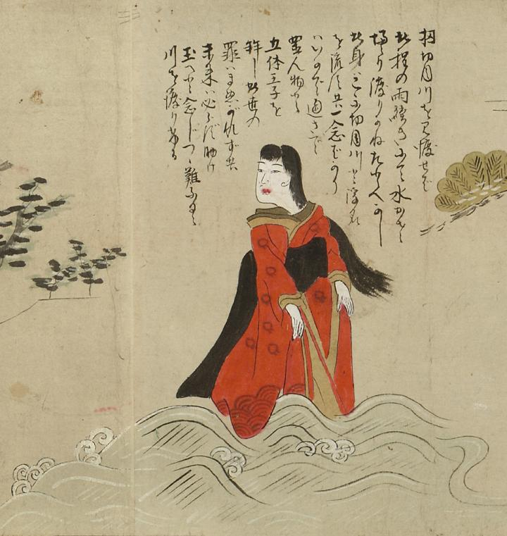

清姫；キヨヒメ，川；カワ

切目川を渡る清姫の姿。清姫は髪をたらし、赤い着物で黒い帯をたらしている。足元には荒れ狂う波が描かれている。詞書には「さて切目川を見渡せば此程の雨続きにて水かさ増さり渡りかねたとへなし此身はこゝに切目川と浮名を流す共一念ばかりはいかで通さで置ん物と五体王子を拝し此世の罪はまぬがれず共未来は必らず助け玉へと念じつゝ難なく川を渡りける」とある。
出典：親書誌：U426_nichibunken_0055：道成寺縁起；ドウジョウジエンギ／日付：2006／資源識別子：U426_nichibunken_0055_0002_0000
Copyright (c)2010- International Research Center for Japanese Studies, Kyoto, Japan. All rights reserved.